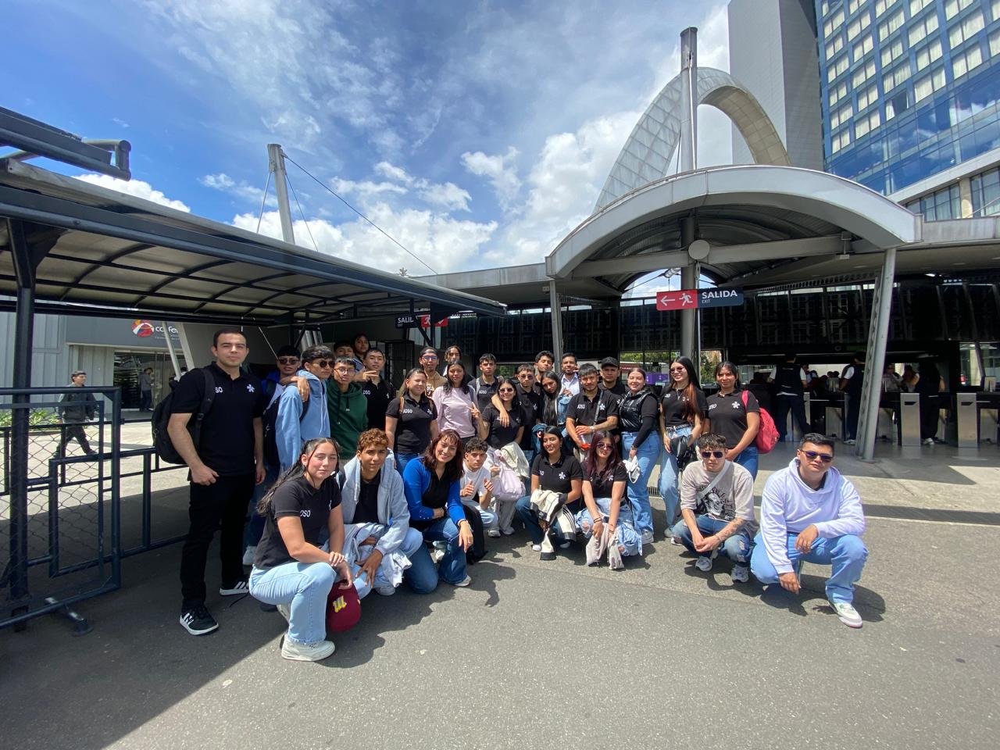

Conclusiones del Proyecto
Y ya para concluir despues de ver el recorrido de nuestra pagina, podemos concluir que estos espacios son muy importantes para nosotros ya que muestran el gran impacto de la tecnologia en nuestra vida tanto profesional como personal y asi los comferencistan quieren dar a comprender como es el avance cada dia mas de la tecnologia el saber convivir con ellas es muy importante, despues de que los profesionales abarcaran distintos temas reflexione y me di de cuenta que hoy podemos ser los asistentes pero en un futuro podemos ser nosotros los que demos la conferencia .
